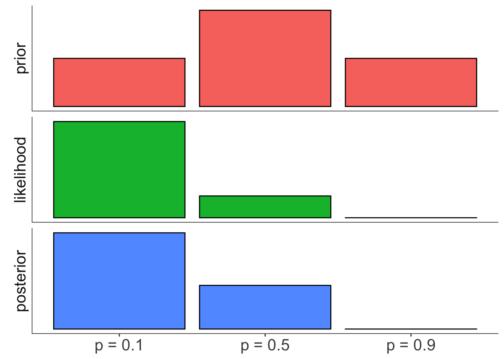
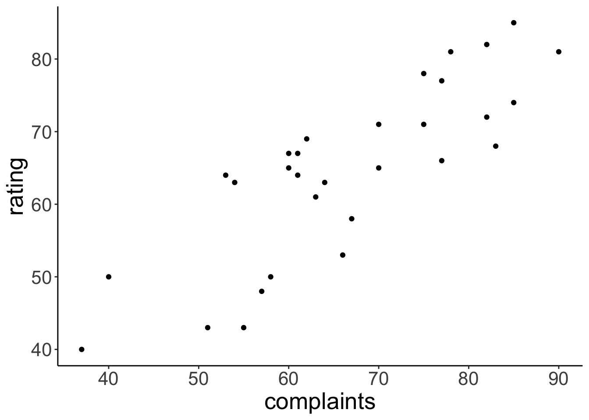
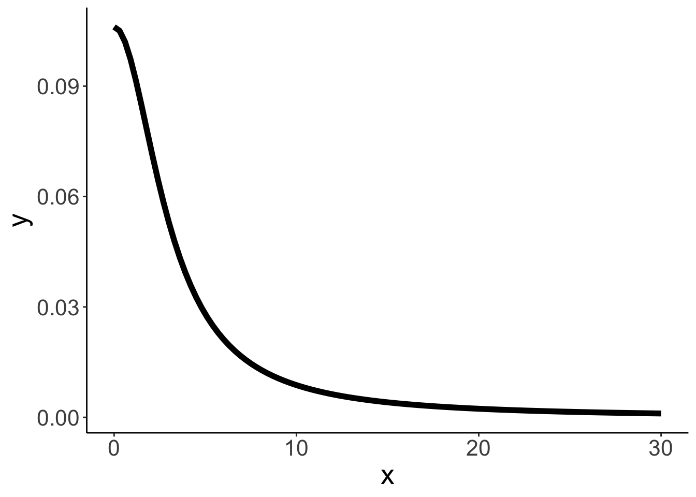
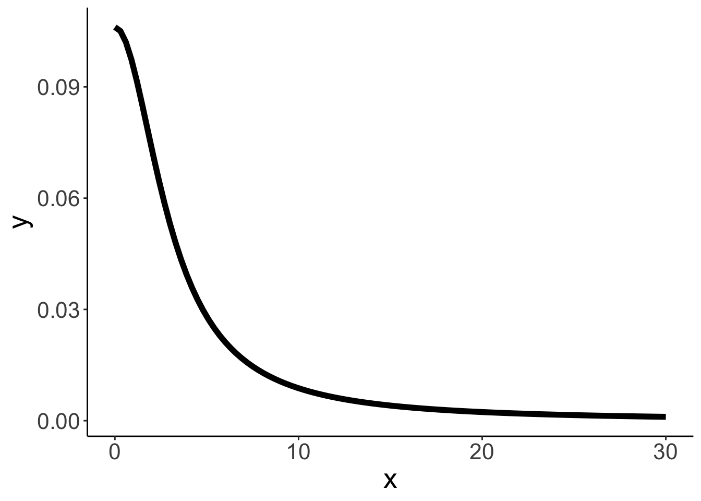
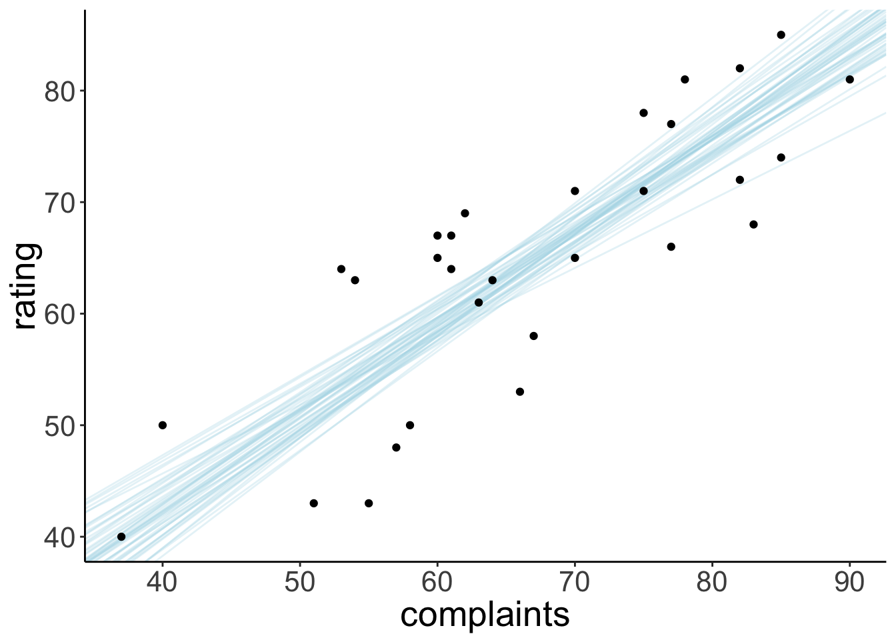

Chapter 22 Bayesian data analysis 2
22.1 Load packages and set plotting theme
library("knitr") # for knitting RMarkdown
library("kableExtra") # for making nice tables
library("janitor") # for cleaning column names
library("greta") # for writing Bayesian models
library("tidybayes") # tidying up results from Bayesian models
library("cowplot") # for making figure panels
library("ggrepel") # for labels in ggplots
library("gganimate") # for animations
library("extraDistr") # additional probability distributions
library("tidyverse") # for wrangling, plotting, etc.
opts_chunk$set(
comment = "",
results = "hold",
fig.show = "hold"
)theme_set(
theme_classic() + #set the theme
theme(text = element_text(size = 20)) #set the default text size
)22.2 Doing Bayesian inference “by hand”
22.2.1 Sequential updating based on the Beta distribution
# data
data = c(0, 1, 1, 0, 1, 1, 1, 1)
# whether observation is a success or failure
success = c(0, cumsum(data))
failure = c(0, cumsum(1 - data))
# I've added 0 at the beginning to show the prior
# plotting function
fun.plot_beta = function(success, failure){
ggplot(data = tibble(x = c(0, 1)),
mapping = aes(x = x)) +
stat_function(fun = "dbeta",
args = list(shape1 = success + 1, shape2 = failure + 1),
geom = "area",
color = "black",
fill = "lightblue") +
coord_cartesian(expand = F) +
scale_x_continuous(breaks = seq(0.25, 0.75, 0.25)) +
theme(axis.title = element_blank(),
axis.text.y = element_blank(),
axis.ticks.y = element_blank(),
plot.margin = margin(r = 1, t = 0.5, unit = "cm"))
}
# generate the plots
plots = map2(success, failure, ~ fun.plot_beta(.x, .y))
# make a grid of plots
plot_grid(plotlist = plots)
22.2.2 Coin flip example
Is the coin biased?
# data
data = rep(0:1, c(8, 2))
# parameters
theta = c(0.1, 0.5, 0.9)
# prior
prior = c(0.25, 0.5, 0.25)
# prior = c(0.1, 0.1, 0.8) # alternative setting of the prior
# prior = c(0.000001, 0.000001, 0.999998) # another prior setting
# likelihood
likelihood = dbinom(sum(data == 1), size = length(data), prob = theta)
# posterior
posterior = likelihood * prior / sum(likelihood * prior)
# store in data frame
df.coins = tibble(
theta = theta,
prior = prior,
likelihood = likelihood,
posterior = posterior
) Visualize the results:
df.coins %>%
gather("index", "value", -theta) %>%
mutate(index = factor(index, levels = c("prior", "likelihood", "posterior")),
theta = factor(theta, labels = c("p = 0.1", "p = 0.5", "p = 0.9"))) %>%
ggplot(data = .,
mapping = aes(x = theta,
y = value,
fill = index)) +
geom_bar(stat = "identity",
color = "black") +
facet_grid(rows = vars(index),
switch = "y",
scales = "free") +
annotate("segment", x = -Inf, xend = Inf, y = -Inf, yend = -Inf) +
annotate("segment", x = -Inf, xend = -Inf, y = -Inf, yend = Inf) +
theme(legend.position = "none",
strip.background = element_blank(),
axis.title.y = element_blank(),
axis.text.y = element_blank(),
axis.ticks.y = element_blank(),
axis.title.x = element_blank(),
axis.line = element_blank())
22.2.3 Bayesian inference by discretization
22.2.4 Effect of the prior
# grid
theta = seq(0, 1, 0.01)
# data
data = rep(0:1, c(8, 2))
# calculate posterior
df.prior_effect = tibble(theta = theta,
prior_uniform = dbeta(theta, shape1 = 1, shape2 = 1),
prior_normal = dbeta(theta, shape1 = 5, shape2 = 5),
prior_biased = dbeta(theta, shape1 = 8, shape2 = 2)) %>%
gather("prior_index", "prior", -theta) %>%
mutate(likelihood = dbinom(sum(data == 1),
size = length(data),
prob = theta)) %>%
group_by(prior_index) %>%
mutate(posterior = likelihood * prior / sum(likelihood * prior)) %>%
ungroup() %>%
gather("index", "value", -c(theta, prior_index))
# make the plot
df.prior_effect %>%
mutate(index = factor(index, levels = c("prior", "likelihood", "posterior")),
prior_index = factor(prior_index,
levels = c("prior_uniform", "prior_normal", "prior_biased"),
labels = c("uniform", "symmetric", "asymmetric"))) %>%
ggplot(data = .,
mapping = aes(x = theta,
y = value,
color = index)) +
geom_line(size = 1) +
facet_grid(cols = vars(prior_index),
rows = vars(index),
scales = "free",
switch = "y") +
scale_x_continuous(breaks = seq(0, 1, 0.2)) +
annotate("segment", x = -Inf, xend = Inf, y = -Inf, yend = -Inf) +
annotate("segment", x = -Inf, xend = -Inf, y = -Inf, yend = Inf) +
theme(legend.position = "none",
strip.background = element_blank(),
axis.title.y = element_blank(),
axis.text.y = element_blank(),
axis.ticks.y = element_blank(),
axis.text.x = element_text(size = 10),
axis.line = element_blank())
Figure 22.1: Illustration of how the prior affects the posterior.
22.2.5 Effect of the likelihood
# grid
theta = seq(0, 1, 0.01)
df.likelihood_effect = tibble(theta = theta,
prior = dbeta(theta, shape1 = 2, shape2 = 8),
likelihood_left = dbeta(theta, shape1 = 1, shape2 = 9),
likelihood_center = dbeta(theta, shape1 = 5, shape2 = 5),
likelihood_right = dbeta(theta, shape1 = 9, shape2 = 1)) %>%
gather("likelihood_index", "likelihood", -c("theta", "prior")) %>%
group_by(likelihood_index) %>%
mutate(posterior = likelihood * prior / sum(likelihood * prior)) %>%
ungroup() %>%
gather("index", "value", -c(theta, likelihood_index))
df.likelihood_effect %>%
mutate(index = factor(index, levels = c("prior", "likelihood", "posterior")),
likelihood_index = factor(likelihood_index,
levels = c("likelihood_left", "likelihood_center", "likelihood_right"),
labels = c("left", "center", "right"))) %>%
ggplot(data = .,
mapping = aes(x = theta,
y = value,
color = index)) +
geom_line(size = 1) +
facet_grid(cols = vars(likelihood_index),
rows = vars(index),
scales = "free",
switch = "y") +
scale_x_continuous(breaks = seq(0, 1, 0.2)) +
annotate("segment", x = -Inf, xend = Inf, y = -Inf, yend = -Inf) +
annotate("segment", x = -Inf, xend = -Inf, y = -Inf, yend = Inf) +
theme(legend.position = "none",
strip.background = element_blank(),
axis.title.y = element_blank(),
axis.text.y = element_blank(),
axis.ticks.y = element_blank(),
axis.text.x = element_text(size = 10),
axis.line = element_blank(),
strip.text.x = element_blank())Figure 22.2: Illustration of how the likelihood of the data affects the posterior.
22.2.6 Effect of the sample size
# grid
theta = seq(0, 1, 0.01)
df.sample_size_effect = tibble(theta = theta,
prior = dbeta(theta, shape1 = 5, shape2 = 5),
likelihood_low = dbeta(theta, shape1 = 2, shape2 = 8),
likelihood_medium = dbeta(theta, shape1 = 10, shape2 = 40),
likelihood_high = dbeta(theta, shape1 = 20, shape2 = 80)) %>%
gather("likelihood_index", "likelihood", -c("theta", "prior")) %>%
group_by(likelihood_index) %>%
mutate(posterior = likelihood * prior / sum(likelihood * prior)) %>%
ungroup() %>%
gather("index", "value", -c(theta, likelihood_index))
df.sample_size_effect %>%
mutate(index = factor(index, levels = c("prior", "likelihood", "posterior")),
likelihood_index = factor(likelihood_index,
levels = c("likelihood_low", "likelihood_medium", "likelihood_high"),
labels = c("n = low", "n = medium", "n = high"))) %>%
ggplot(data = .,
mapping = aes(x = theta,
y = value,
color = index)) +
geom_line(size = 1) +
facet_grid(cols = vars(likelihood_index),
rows = vars(index),
scales = "free",
switch = "y") +
scale_x_continuous(breaks = seq(0, 1, 0.2)) +
annotate("segment", x = -Inf, xend = Inf, y = -Inf, yend = -Inf) +
annotate("segment", x = -Inf, xend = -Inf, y = -Inf, yend = Inf) +
theme(legend.position = "none",
strip.background = element_blank(),
axis.title.y = element_blank(),
axis.text.y = element_blank(),
axis.ticks.y = element_blank(),
axis.text.x = element_text(size = 10),
axis.line = element_blank())
22.3 Distributions
22.3.1 Normal vs Student-t distribution
tibble(x = c(-5, 5)) %>%
ggplot(aes(x = x)) +
stat_function(fun = "dnorm",
size = 1,
color = "blue") +
stat_function(fun = "dt",
size = 1,
color = "red",
args = list(df = 1))
Figure 22.3: Comparison between the normal distribution and the student-t distribution.
22.3.2 Beta distributions
fun.draw_beta = function(shape1, shape2){
ggplot(data = tibble(x = c(0, 1)),
aes(x = x)) +
stat_function(fun = "dbeta",
size = 1,
color = "black",
args = list(shape1 = shape1, shape2 = shape2)) +
annotate(geom = "text",
label = str_c("Beta(", shape1,",",shape2,")"),
x = 0.5,
y = Inf,
hjust = 0.5,
vjust = 1.1,
size = 4) +
scale_x_continuous(breaks = seq(0, 1, 0.2)) +
theme(axis.title.x = element_blank())
}
shape1 = c(1, 0.5, 5, 1, 8, 20)
shape2 = c(1, 0.5, 5, 9, 2, 20)
p.list = map2(.x = shape1, .y = shape2, ~ fun.draw_beta(.x, .y))
plot_grid(plotlist = p.list)
Figure 22.4: Beta distributions with different parameter settings.
22.3.3 Normal distributions
tibble(x = c(-10, 10)) %>%
ggplot(aes(x = x)) +
stat_function(fun = "dnorm",
size = 1,
color = "blue",
args = list(sd = 1)) +
stat_function(fun = "dnorm",
size = 1,
color = "red",
args = list(sd = 5))
Figure 22.5: Normal distributions with different standard deviation.
22.3.4 Distributions for non-negative parameters
tibble(x = c(0, 10)) %>%
ggplot(aes(x = x)) +
stat_function(fun = "dcauchy",
size = 1,
color = "blue",
args = list(location = 0, scale = 1),
xlim = c(0, 10)) +
stat_function(fun = "dgamma",
size = 1,
color = "red",
args = list(shape = 4, rate = 2))
Figure 22.6: Cauchy and Gamma distribution.
22.4 Inference via sampling
Example for how we can compute probabilities based on random samples generated from a distribution.
# generate samples
df.samples = tibble(x = rnorm(n = 10000, mean = 1, sd = 2))
# visualize distribution
ggplot(data = df.samples,
mapping = aes(x = x)) +
stat_density(geom = "line",
color = "red",
size = 2) +
stat_function(fun = "dnorm",
args = list(mean = 1, sd = 2),
color = "black",
linetype = 2)
# calculate probability based on samples
df.samples %>%
summarize(prob = sum(x >= 0 & x < 4)/n())
# calculate probability based on theoretical distribution
pnorm(4, mean = 1, sd = 2) - pnorm(0, mean = 1, sd = 2)# A tibble: 1 x 1
prob
<dbl>
1 0.626
[1] 0.6246553
22.5 Greta
You can find out more about how get started with “greta” here: https://greta-stats.org/articles/get_started.html. Make sure to install the development version of “greta” (as shown in the “install-packages” code chunk above: devtools::install_github("greta-dev/greta")).
22.5.1 Attitude data set
# load the attitude data set
df.attitude = attitudeVisualize relationship between how well complaints are handled and the overall rating of an employee
ggplot(data = df.attitude,
mapping = aes(x = complaints,
y = rating)) +
geom_point()
22.5.2 Frequentist analysis
# fit model
fit = lm(formula = rating ~ 1 + complaints,
data = df.attitude)
# print summary
fit %>% summary()
Call:
lm(formula = rating ~ 1 + complaints, data = df.attitude)
Residuals:
Min 1Q Median 3Q Max
-12.8799 -5.9905 0.1783 6.2978 9.6294
Coefficients:
Estimate Std. Error t value Pr(>|t|)
(Intercept) 14.37632 6.61999 2.172 0.0385 *
complaints 0.75461 0.09753 7.737 1.99e-08 ***
---
Signif. codes: 0 '***' 0.001 '**' 0.01 '*' 0.05 '.' 0.1 ' ' 1
Residual standard error: 6.993 on 28 degrees of freedom
Multiple R-squared: 0.6813, Adjusted R-squared: 0.6699
F-statistic: 59.86 on 1 and 28 DF, p-value: 1.988e-08Visualize the model’s predictions
ggplot(data = df.attitude,
mapping = aes(x = complaints,
y = rating)) +
geom_smooth(method = "lm",
color = "black") +
geom_point()
22.5.3 Bayesian regression
22.5.3.1 Fit the model
# variables & priors
b0 = normal(0, 10)
b1 = normal(0, 10)
sd = cauchy(0, 3, truncation = c(0, Inf))
# linear predictor
mu = b0 + b1 * df.attitude$complaints
# observation model (likelihood)
distribution(df.attitude$rating) = normal(mu, sd)
# define the model
m = model(b0, b1, sd)Visualize the model as graph:
# plotting
plot(m)Draw samples from the posterior distribution:
# sampling
draws = mcmc(m, n_samples = 1000)
# tidy up the draws
df.draws = tidy_draws(draws) %>%
clean_names()22.5.3.2 Visualize the priors
These are the priors I used for the intercept, regression weights, and the standard deviation of the Gaussian likelihood function:
# Gaussian
ggplot(tibble(x = c(-30, 30)),
aes(x = x)) +
stat_function(fun = "dnorm",
size = 2,
args = list(sd = 10))
# Cauchy
ggplot(tibble(x = c(0, 30)),
aes(x = x)) +
stat_function(fun = "dcauchy",
size = 2,
args = list(location = 0,
scale = 3)) 

22.5.3.3 Visualize the posteriors
This is what the posterior looks like for the three parameters in the model:
df.draws %>%
select(draw:sd) %>%
gather("index", "value", -draw) %>%
ggplot(data = .,
mapping = aes(x = value)) +
stat_density(geom = "line") +
facet_grid(rows = vars(index),
scales = "free_y",
switch = "y") +
annotate("segment", x = -Inf, xend = Inf, y = -Inf, yend = -Inf) +
annotate("segment", x = -Inf, xend = -Inf, y = -Inf, yend = Inf) +
theme(legend.position = "none",
strip.background = element_blank(),
axis.title.y = element_blank(),
axis.text.y = element_blank(),
axis.ticks.y = element_blank(),
axis.text.x = element_text(size = 10),
axis.line = element_blank(),
strip.text.x = element_blank())
22.5.3.4 Visualize model predictions
Let’s take some samples from the posterior to visualize the model predictions:
ggplot(data = df.attitude,
mapping = aes(x = complaints,
y = rating)) +
geom_abline(data = df.draws %>%
sample_n(size = 50),
aes(intercept = b0,
slope = b1),
alpha = 0.3,
color = "lightblue") +
geom_point() 
22.5.3.5 Posterior predictive check
Let’s make an animation that illustrates what predicted data sets (based on samples from the posterior) would look like:
df.draws %>%
sample_n(size = 10) %>%
mutate(complaints = list(seq(min(df.attitude$complaints),
max(df.attitude$complaints),
length.out = nrow(df.attitude)))) %>%
unnest(complaints) %>%
mutate(prediction = b0 + b1 * complaints + rnorm(n(), sd = sd)) %>%
ggplot(aes(x = complaints, y = prediction)) +
geom_point(alpha = 0.8,
color = "lightblue") +
geom_point(data = df.attitude,
aes(y = rating,
x = complaints)) +
coord_cartesian(xlim = c(20, 100),
ylim = c(20, 100)) +
transition_manual(draw)
# animate(p, nframes = 60, width = 800, height = 600, res = 96, type = "cairo")
# anim_save("posterior_predictive.gif")
22.5.3.6 Prior predictive check
And let’s illustrate what data we would have expected to see just based on the information that we encoded in our priors.
sample_size = 10
tibble(
b0 = rnorm(sample_size, mean = 0, sd = 10),
b1 = rnorm(sample_size, mean = 0, sd = 10),
sd = rhcauchy(sample_size, sigma = 3),
draw = 1:sample_size
) %>%
mutate(complaints = list(runif(nrow(df.attitude),
min = min(df.attitude$complaints),
max = max(df.attitude$complaints)))) %>%
unnest(complaints) %>%
mutate(prediction = b0 + b1 * complaints + rnorm(n(), sd = sd)) %>%
ggplot(aes(x = complaints, y = prediction)) +
geom_point(alpha = 0.8,
color = "lightblue") +
geom_point(data = df.attitude,
aes(y = rating,
x = complaints)) +
transition_manual(draw)
# animate(p, nframes = 60, width = 800, height = 600, res = 96, type = "cairo")
# anim_save("prior_predictive.gif")